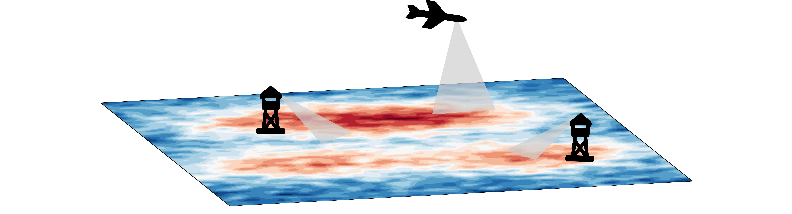

Our Story
Climate decision-making is a space that requires tangible science solutions and cross-sector cooperation to operate efficiently. AtmoFacts was born out of a vision to rally the climate community around molecule-counting flux measurements. Molecule-counting flux measurements have the potential to connect diverse perspectives on our environment and climate.

Unlike its satellite-derived counterpart, a direct flux measurement from a tower or aircraft does not rely on any proxies, nor does it care what surface it is measuring. City or prairie, it's just counting molecules. This makes it arguably the most accurate and interoperable source of greenhouse gas data. Our technologies rely on the high quality of direct flux measurement to make sure that interpretations and decisions made with our data have the highest integrity possible.
The problem with state-of-the-art flux techniques is that it's difficult and expensive to analyze and interpret the data. Because of this, high quality flux measurements typically do not venture as far outside of academia as they should. There is tons of untapped potential out there in the form of high quality flux data. Our FluxMapper™ software is a tool dedicated to making GHG emissions/removal quantifications from direct flux measurements more accessible for research and decision making. FluxMapper™ works on any kind of flux systems, from aircraft to tower.
If you are worried about transparency, fear not, we have you covered. We want to make sure that everyone who decides to use our technology can track the progress of their data along the way - from the first molecule measured to the final map product. First, with creative licensing with our partners. Second, with periodic releases of open source versions of FluxMapper™. Finally, with a decade of peer-reviewed research out there for you to read, the science that drives our algorithms is no secret.


Welcome to AtmoFacts.